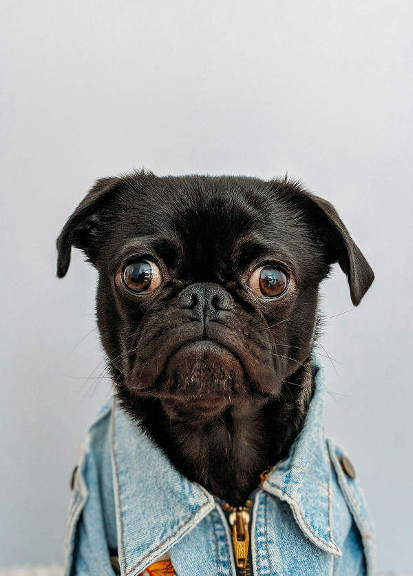
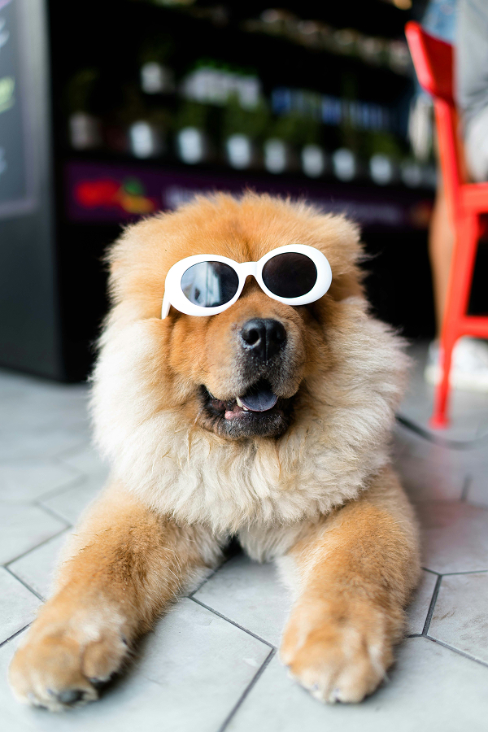
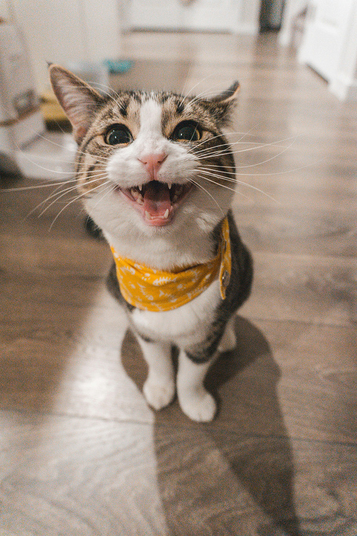
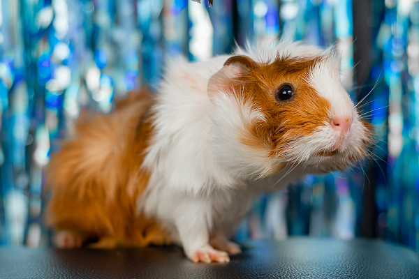

Nos animaux à adopter
Découvrez en images tous nos animaux qui attendent une famille aimante. Chaque photo raconte
une histoire et un espoir








Découvrez en images tous nos animaux qui attendent une famille aimante. Chaque photo raconte
une histoire et un espoir
Adopter un animal est un engagement sérieux et à long terme. Voici notre processus d'adoption en quelques étapes simples.
🔍
Parcourez notre base de
données d'animaux disponibles
et utilisez nos filtres pour trouver
celui qui correspond à votre
mode de vie.
📝
Soumettez votre formulaire
d'adoption pour l'animal qui vous
intéresse. Nous examinons
chaque demande avec soin.
👋🏼
Visitez le refuge pour rencontrer
l'animal et voir si vous êtes
compatibles. C'est une étape
essentielle du processus.
🏡
Une fois votre demande
approuvée, vous pouvez
accueillir votre nouvel ami chez
vous. Nous restons disponibles
pour vous conseiller.
Adoptez, partagez, soutenez... Chaque geste compte. Que vous ouvriez votre foyer ou votre coeur,
vous pouvez offrir une seconde chance à un animal abandonné.